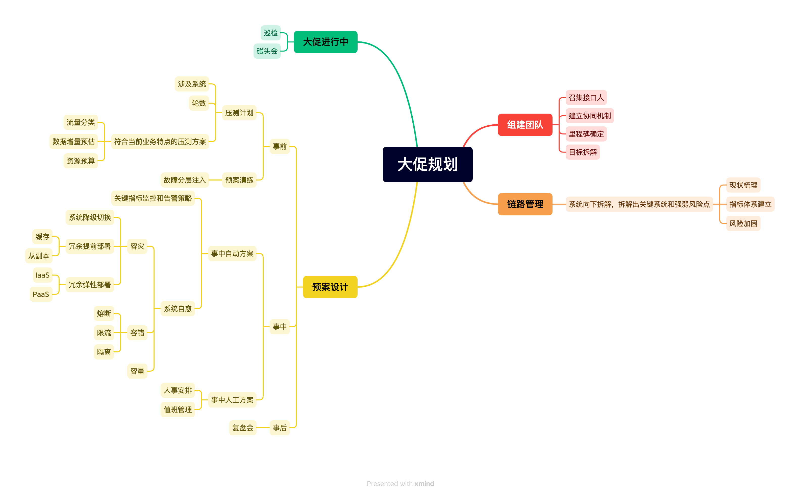

活动保障性体系建设和实践的总结

大促规划.xmind活动的定义和特点
活动具有大并发、高流量的特点，前期充足的准备是活动顺利完成的必要条件。
准备好完备的保证流程，可以为相关人员提供指引。
基本的保障方案
- 事前：严格按照保障步骤分工执行，活动要报备，核心链路要梳理，梳理完要评估容量和准备，要治理风险，要准备预案，要建设大盘，准备压测和演练预案，要安排值班。
- 事中：相关责任方（要分技术负责人和运维负责人，召集相关人员，组成稳定性保障小组）监控线上数据，以线上/线下会议、群聊和电话等多个方式参与值班并及时响应异常事件。
- 事后：组织复盘，总结亮点，指出不足，沉淀经验。
活动报备
要理清活动信息：活动背景、活动时间、用户参与路径、活动链接、活动 玩法、预计UV数、负责人。
核心链路的设计与梳理
核心链路的梳理、设计需和活动保障的几个核心要素相结合，核心要素分为：隔离、限流、容量。 - 隔离：域名隔离、Nginx集群隔离、核心服务隔离、以及其他一些重要服务的隔离。 - 限流：前端活动业务限流、Nginx限流（HTTP限流）、服务限流（RPC）等。特别要关注接入层的限流能力和方案。 - 容量：从域名解析到后端存储的系列容量评估和准备，容量无法保障的时候需做到对应的预案。特别要关注网关、存储和其他有状态或者单点服务的容量问题。
评估方案
- 评估基础资源：按照已知的链路图梳理相关的资源准备是否充足。
- 核心服务评估：根据核心链路，进行容量评估，并完成服务扩容，或接入弹性扩缩容。
- 依赖服务评估：核心链路服务依赖的下游服务，进行容量评估，并完成服务扩容，或接入弹性扩缩容-要熟悉弹性扩容的策略，精确设计弹性扩容的流程。
- 其他关联服务评估：
- 前置行为：用户在进入活动页面之前的一些行为，会对某些服务造成一定压力，比如首页推荐；
- 后置行为：用户参加完活动之后的一些行为，比如去我的券包去查看券信息，或者查看订单信息，此时会对app中“我的”部分服务造成压力，比如红包卡券服务、订单查询服务、个人资源位服务、动态布局服务。
风险治理
- 评估服务是否有限流、服务是否有熔断机制、服务是否隔离（服务仅支持本次活动）等方案上的风险。这每一种机制，都应对一类风险。
- 评估是否有安全风险。
- 对运营策略、文案、账户等做整体评估，避免出现歧义客诉、法律纠纷、活动效果大打折扣等问题。
大盘建设
要把监控告警放到统一的大盘中，以便高效精准地定位问题。
核心指标应包括交易数据、客诉数据、核心接口成功率、流量等。
活动后复盘
- 目标回顾：目标拆分，达成情况回顾
- case study 复盘：沉淀经验，总结教训，TODO 落地与完成。
- 峰值与容量回顾：对比实际峰值与预估差异，实际容量下，稳定性是否得到保障，及容量是否高估太多而造成成本浪费。
- 预案回顾：预案是否到位、完备，有无预案待补充和完善。
- 亮点与不足：肯定亮点和回顾不足。
- 后续改进：输出正确的做法及未来规划。
All articles on this blog are licensed under CC BY-NC-SA 4.0 unless otherwise stated.
Related Articles

2017-12-22
分布式事务
问题定义 对经典的电商场景而言：下单是个插入操作，扣减金额和库存是个更新操作，操作的模型不同，如果进行分布式的服务拆分，则可能无法在一个本地事务里操作几个模型，涉及跨库事务。 CAP 定义 根据 Eric Brewer 提出的 CAP 理论： Consistency：All Nodes see the same data at the same time。所有节点看到同一份最新数据（线性一致性）。 Availability：Reads and writes always succeed。非故障节点必须在合理时间内响应。 Partition tolerance：System continues to operate despite arbitrary message loss or failure of part of the system。网络分区时系统继续运行。 由此诞生三种设计约束和取舍方向： CA：放弃P，仅适用于单点系统，非分布式，如 MySQL主从同步。 AP：放弃强一致性，保证高可用。Cassandra，DynamoDB。Gossip协议可实现最终一致性。 CP...

2018-01-30
几种共识算法
达成共识的英文原文是 come to consensus。达成共识以后，也未必代表数据是完全一致的（Raft 算法中 leader 发出 append log 的 commit 命令即算达成共识？但如果中途数据丢失，则还是会有子节点数据不一致）。 在分布式环境下，多个系统协同工作的效率，受制于系统交叉点的性能。在需要达成分布式共识的场景下，分布式共识算法在保证系统安全性的同时，限制了全系统横向扩展的性能提升。 根据环境的不同，可以应用不同的共识算法。 在完全互信的环境下-私有链、私有的分布式数据库，节点之间可以使用 Paxos 或者 Raft 这种 leader 相对固定的算法。 在有限互信的环境下-联盟链，可以使用 PBFT。PBFT 算法是依据确定性的投票（可能是漫长的投票，也可能进入死循环）达到确定性一致的算法。 在没有互信的情况下-公有链，可以使用 POW/POS/DPOS/POA。这类算法是基于概率得到正确的最终一致性，性能比 PBFT 要稍微好点。 最好的共识算法应该模块化，例如 Corda 中的 notary，Hyperledger fabric 中的 solo/k...

2018-04-02
一个滚动重启的状态保存问题
很多时候滚动重启，都会导致状态丢失。比较好的设计方法是把服务本身设计成无状态的，然后在上游的服务上做好 failover，然后增加 standby server，让 sticky 数据 transmit 到 standby 机器上，让 request 失败以后可以自己由上游重传到 standby server。然后就可以滚动重启了。 这大部分场景下还要考虑幂等的问题。 这就看得出热配置热替换的重要性了。在大多数情况下，除了发布新的 feature 升级以外，都应该尽量用热配置来避免重启。

2018-11-28
正交性
所谓正交性（orthogonal 意为正交的），就是设计的维度与其他维度完全隔离，一个正交的设计/值域设计，其变化绝不会受其他正交维度影响，也不会影响其他正交维度。 我们可以把 API 设计成正交的。这样 API 有独立变化的空间的。 我们可以把问题域切分清楚。问题域之间完全不相互干涉（注意跨问题域问题）。 我们可以把变量、字段、列设计成正交的。这样不同业务场景下，列之间的赋值不会相互覆盖。

2019-08-30
《高可用恢复思路》笔记
遇到线上问题，经常陷入一个误区：一定要找到问题的根因（root cause）。但实际上对线上应用而言，最重要的是恢复可用性，所以在开发设计环境除了完成功能性需求以外，还需要加入非功能性设计的需求： 限流保护。抵挡来自突发流量冲垮整个集群。 降级保护，对调用的服务接口保持警惕，其各种因素导致不可用，可以对齐降级，从而确保核心功能可用。 削峰填谷（traffic shaping），不因突发数据来袭，造成任务消费陡增，造成调用系统的连串抖动。 这些基本的系统保护，是应对未来的各种突发不确定事件的高可用思考。 以上描述的是问题的应对机制设计，问题的发现机制，也需要结构化地考虑，体系化地建设： 发现机制，是我们的眼睛，也是基础。 监控主指标，需要找对业务的主要指标，常见的主指标一般是：RT（响应时间）、总量、成功量、失败量、成功率。 主指标有异常，还要有细分维度（即结果还可以内部 group by aggregation）。 快速恢复 根据监控快速寻找问题发生的方向和位置。 找对恢复的人、恢复的预案。 倾向于选择成本低的恢复手段。—- 并不是所有的恢复都用大招（熔断、限流），大招一定...

2019-09-26
架构整洁之道笔记
最早的《The Clean Architecture》诞生于 2012年，这个问题很早就被讨论清楚了。 思维导图： 思维导图 整洁架构抽象 注意，所有的接口都是在高层声明的：UseCase Input Port 和 UseCase Output port，所以高层可以实现高层的接口，低层也可以实现高层的接口。 注意，sofa的分层就是在一个横向的模块里声明了业务用例的接口和 core-model 的接口，这样源代码级的依赖都集中在抽象上： Use Case Interactor 和 Presenter 应该是可测试的，而 Data Access Interface、View、ORM 应该是 humble object。所以一个应用的低层（外层）应该是被排除掉不做测试的。 附件下载： xmind 关于源代码中的依赖关系的一些澄清： “使用”并不意味着“定义”，而只是引用 dashed outline 代表虚线框，也代表抽象。